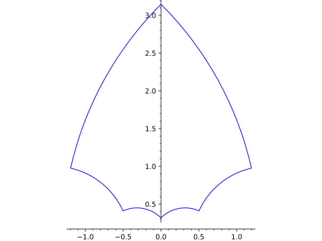
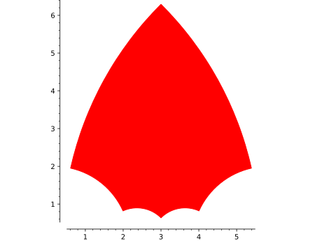

Regular polygons in the upper half model for hyperbolic plane¶
AUTHORS:
Javier Honrubia (2016-01)
-
class
sage.plot.hyperbolic_regular_polygon.HyperbolicRegularPolygon(sides, i_angle, center, options)¶ Bases:
sage.plot.hyperbolic_polygon.HyperbolicPolygonPrimitive class for regular hyperbolic polygon type.
See
hyperbolic_regular_polygon?for information about plotting a hyperbolic regular polygon in the upper complex halfplane.INPUT:
sides– number of sides of the polygoni_angle– interior angle of the polygoncenter– center point as a complex number of the polygon
EXAMPLES:
Note that constructions should use
hyperbolic_regular_polygon():sage: from sage.plot.hyperbolic_regular_polygon import HyperbolicRegularPolygon sage: print(HyperbolicRegularPolygon(5,pi/2,I, {})) Hyperbolic regular polygon (sides=5, i_angle=1/2*pi, center=1.00000000000000*I)
The code verifies is there exists a compact hyperbolic regular polygon with the given data, checking
\[A(\mathcal{P}) = \pi(s-2) - s \cdot \alpha > 0,\]where \(s\) is
sidesand \(\alpha\) isi_angle`. This raises an error if the ``i_angleis less than the minimum to generate a compact polygon:sage: from sage.plot.hyperbolic_regular_polygon import HyperbolicRegularPolygon sage: P = HyperbolicRegularPolygon(4, pi/2, I, {}) Traceback (most recent call last): ... ValueError: there exists no hyperbolic regular compact polygon, for sides=4 the interior angle must be less than 1/2*pi
It is an error to give a center outside the upper half plane in this model
sage: from sage.plot.hyperbolic_regular_polygon import HyperbolicRegularPolygon sage: P = HyperbolicRegularPolygon(4, pi/4, 1-I, {}) Traceback (most recent call last): ... ValueError: center: 1.00000000000000 - 1.00000000000000*I is not a valid point in the upper half plane model of the hyperbolic plane
-
sage.plot.hyperbolic_regular_polygon.hyperbolic_regular_polygon(sides, i_angle, center=1.0 * I, alpha=1, fill=False, thickness=1, rgbcolor='blue', zorder=2, linestyle='solid', **options)¶ Return a hyperbolic regular polygon in the upper half model of Hyperbolic plane given the number of sides, interior angle and possibly a center.
Type
?hyperbolic_regular_polygonto see all options.INPUT:
sides– number of sides of the polygoni_angle– interior angle of the polygoncenter– (default: \(i\)) hyperbolic center point (complex number) of the polygon
OPTIONS:
alpha– default: 1fill– default:Falsethickness– default: 1rgbcolor– default:'blue'linestyle– (default:'solid') the style of the line, which can be one of the following:'dashed'or'--''dotted'or':''solid'or'-''dashdot'or'-.'
EXAMPLES:
Show a hyperbolic regular polygon with 6 sides and square angles:
sage: g = hyperbolic_regular_polygon(6, pi/2) sage: g.plot() Graphics object consisting of 1 graphics primitive
With more options:
sage: g = hyperbolic_regular_polygon(6, pi/2, center=3+2*I, fill=True, color='red') sage: g.plot() Graphics object consisting of 1 graphics primitive
The code verifies is there exists a hyperbolic regular polygon with the given data, checking
\[A(\mathcal{P}) = \pi(s-2) - s \cdot \alpha > 0,\]where \(s\) is
sidesand \(\alpha\) isi_angle`. This raises an error if the ``i_angleis less than the minimum to generate a compact polygon:sage: hyperbolic_regular_polygon(4, pi/2) Traceback (most recent call last): ... ValueError: there exists no hyperbolic regular compact polygon, for sides=4 the interior angle must be less than 1/2*pi
It is an error to give a center outside the upper half plane in this model:
sage: from sage.plot.hyperbolic_regular_polygon import hyperbolic_regular_polygon sage: hyperbolic_regular_polygon(4, pi/4, 1-I) Traceback (most recent call last): ... ValueError: center: 1.00000000000000 - 1.00000000000000*I is not a valid point in the upper half plane model of the hyperbolic plane